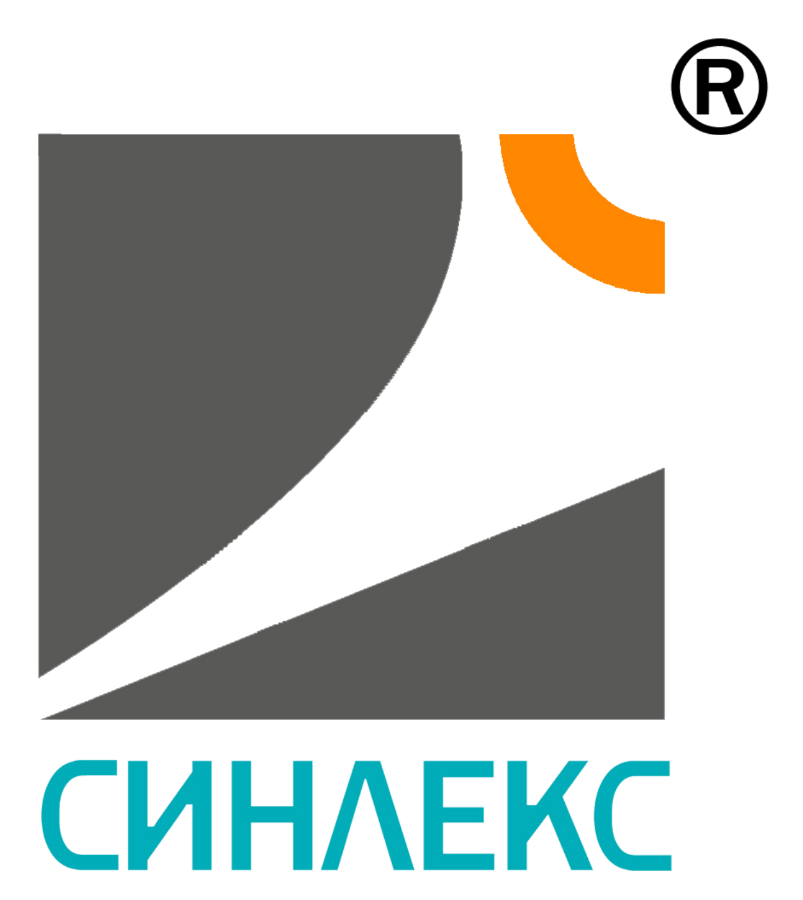
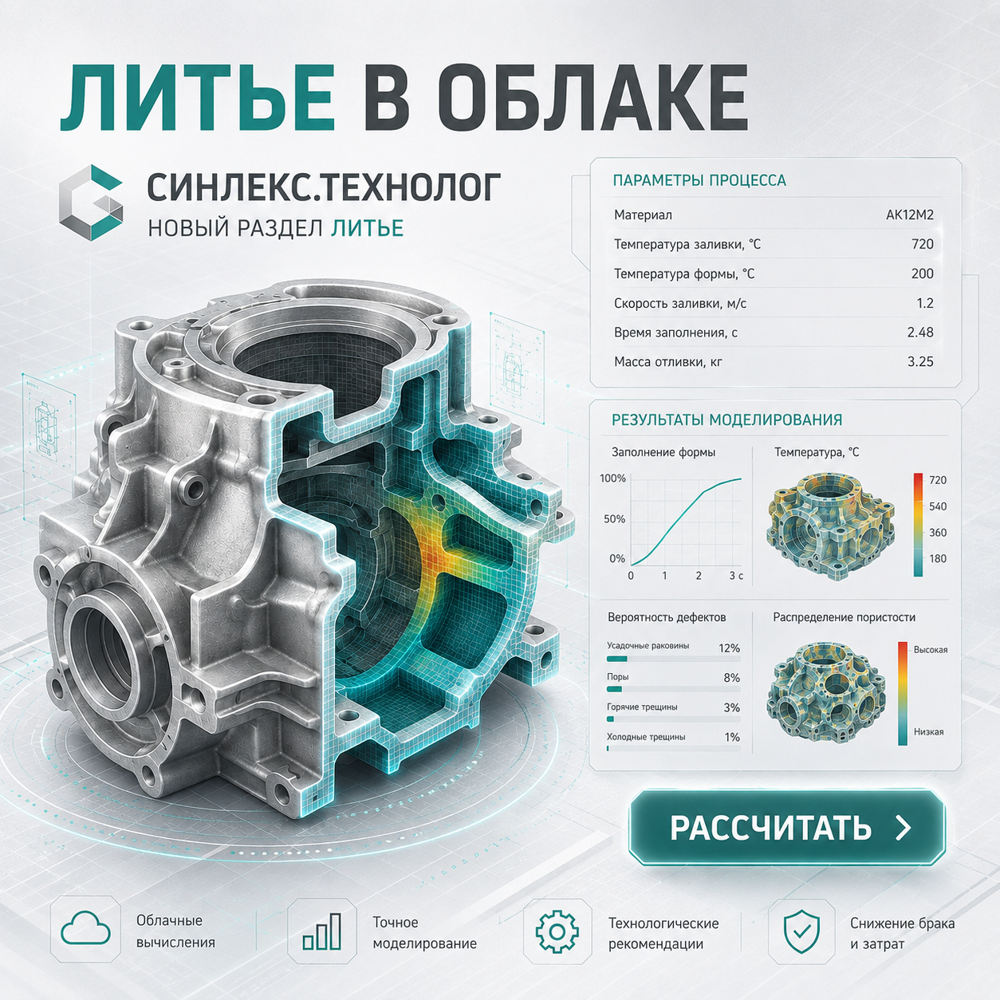

Быстрый старт заказа
Передайте чертеж, STEP или комплект файлов без длинных брифов и ручной пересылки.

Загрузите чертёж, STEP или комплект файлов. Sinlex поможет оформить заявку на металлообработку или литье, получить предварительный расчёт после проверки исходных данных и вести заказ в личном кабинете.
Передайте чертеж, STEP или комплект файлов без длинных брифов и ручной пересылки.
Менеджер уточнит технологичность, сроки, материал, партию и условия изготовления.
Статус заказа, документы, реквизиты и переписка остаются в одной карточке.
Обычно заказ начинается в почте: файлы теряются, версии чертежей путаются, статус приходится уточнять вручную. Sinlex собирает весь процесс в личном кабинете.
Вы видите, какие файлы отправлены, на каком этапе заказ, какие документы доступны и где идет переписка с менеджером.
В кабинете можно работать со STEP/3D-моделью, чертежом и параметрами детали: смотреть геометрию, уточнять материал, количество, заготовку и требования перед запуском заявки.
Припуски, усадка, материал и параметры партии — в одном экране. Это помогает заранее понять, какой запас нужен под обработку, какие риски есть по геометрии и что нужно уточнить до запуска.
Включите припуск, чтобы увидеть оранжевую заготовку вокруг модели и быстрее обсудить технологический запас до запуска заявки.

В модуле литья можно выбрать ЛГМ, ЛПД, литье в песчаные формы и другие технологии, задать материал, партию, усадку и припуски. Sinlex собирает параметры вокруг модели и помогает быстрее понять, как запускать деталь в производство.
Файлы, параметры детали и комментарии попадают в заявку сразу, без длинной цепочки писем.
Материал, партия, сроки и требования обсуждаются вокруг одной детали, а не в разрозненных сообщениях.
После запуска проще вернуться к условиям, документам и истории решений по конкретной позиции.
Перед передачей заказа в работу команда смотрит чертеж, STEP/3D-модель, материал, партию, критичные требования и сроки. Это помогает быстрее перейти от набора файлов к понятной заявке.
Чертеж, STEP, PDF или архив по детали и партии.
Проверяем исходные данные, материал, требования и сроки.
Фиксируем параметры изготовления и документы для запуска.
Следите за заказом и общайтесь с менеджером в кабинете.
Корпусные детали, крышки, плиты, кронштейны, фланцы, валы, литые заготовки и другие изделия по чертежам или 3D-моделям.
Sinlex делает заказ понятным для клиента: от первого файла до статуса изготовления и закрывающих документов.
Корпуса, крышки, плиты, кронштейны и посадочные поверхности.
Валы, фланцы, втулки и детали вращения по чертежу.
Оценка литых заготовок, припусков, усадки, материала и партии.
Сталь, алюминий, нержавеющая сталь, титан и спецзаготовки.
Единичные детали, опытные образцы и небольшие производственные партии.
Вместо разрозненных сообщений — единая карточка заказа: файлы, реквизиты, статус, документы и чат с менеджером. Чертежи и 3D-модели используются только для обработки заявки и согласования изготовления.
Sinlex объединяет заказ, расчёт и сопровождение изготовления деталей в одном кабинете. Вы отправляете чертёж, PDF или STEP, а сервис помогает быстрее перейти от исходных данных к понятной заявке на производство.
Доступны направления мехобработки и литья: фрезеровка, токарная обработка, оценка литых заготовок, расчёт припусков, усадки, материала, массы и ориентира по стоимости партии. Подходит для единичных деталей, опытных образцов и небольших производственных серий.
Регистрация займет несколько минут. После входа вы сможете создать заказ, загрузить файлы и продолжить общение с менеджером.
Связаться с нами: support@sinlex.tech